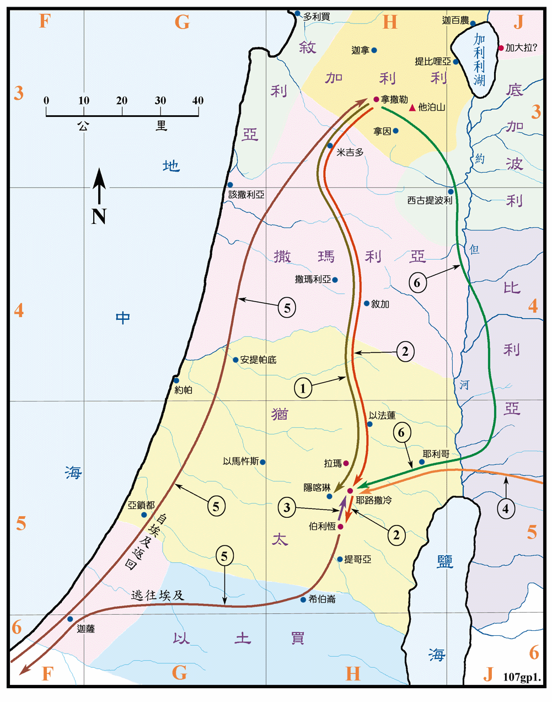

<福图01>主诞生和幼年
主前四年至主后八年

行动线说明
| 序号 | 圣经 | 说明 |
|---|---|---|
| 太1:18-25，路1:26-38 | 天使到拿撒勒向马利亚和约瑟报喜，预言主耶稣将诞生。 | |
| 1 | 路1:39-56 | 马利亚到撒迦利亚家 (按传统的说法是在隐喀琳) 拜访以利沙伯，以利沙伯称赞马利亚是有福的。当时以利沙伯已经怀了施洗约翰。 |
| 2 | 太2:1，路2:4-7 | 当希律作犹太王的时候，约瑟和马利亚从拿撒勒到伯利恒报名上册，耶稣在伯利恒出生。 |
| 3 | 路2:21-38 | 耶稣出生后第八天，约瑟为他行割礼，又带他上耶路撒冷去，把他献与主。 |
| 4 | 太2:1-12 | 有几个博士从东方经耶路撒冷到伯利恒来，俯伏敬拜新生小孩主耶稣，并献上礼物。 |
| 5 | 太2:13-22 | 希律王要杀害耶稣，约瑟被主的使者指示，就带着小孩子同他母亲逃往埃及。直到希律死了，主再指示，他们便往加利利的拿撒勒城去住在那里。 |
| 6 | 路2:41-52 | 当耶稣十二岁的时候，上耶路撒冷守逾越节耶稣到圣殿里，在教师中间一面听一面问，众人都希奇他的聪明和应对。 |
主耶稣是在 4BC 出生，当时是大希律作犹太王，他遵照罗马皇帝奥古斯都凯撒的命令，命人民各归祖籍报名上册，是作为税收依据的户口普查，约瑟和马利亚的祖籍是在伯利恒，所以要从拿撒勒回去，他们一回到伯利恒之后就生了主耶稣。
约瑟一家逃往埃及之时，埃及是罗马帝国的领土，是罗马主要粮食的供应地，直接受罗马皇帝的管辖。早在主前六世纪起，就有犹太人因不同的原因，陆续的迁到埃及，人口众多，甚至在埃及有说迦南话的城镇。主前四世纪末，希腊建造亚力山太城之后，更有大量的犹太人移去，人口有七十馀万，在城内有犹太区，使亚力山太城成为一个犹太人在国外宗教、文化和贸易的中心。约瑟回到拿撒勒时，加利利是属希律安提帕王所管辖。
耶稣一家往返拿撒勒和耶路撒冷之间的路线，圣经中并没有说明。只是照当时的情形，主要的路线有两条。一条是经由米吉多后，转循中央山脉的诸城镇南下。当时犹太人与撒玛利亚人不和，所以多改走另一条路，则是经由西古提波利 (即是古代的伯善)，再渡约但河，沿河的东岸南下，到耶利哥之东时，再渡河经耶利哥去耶路撒冷。在本图中则各绘有一条，以供参考。